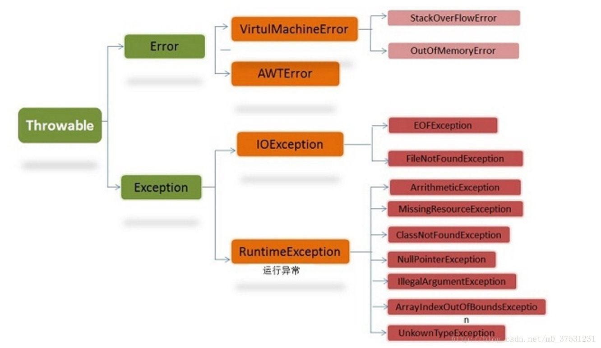

Exception、error、运行时异常和一般异常有何异同
java异常处理 Exception、error、运行时异常和一般异常有何异同
一、开场白 对于程序运行过程中的可能出现异常情况，java语言使用一种称为异常处理的错误捕捉机制进行处理。相信大家对 try { }catch( ){} finally{} 这种结构非常熟悉，使用频率极高。既然经常使用它，而且也是面试常问知识点，我们就有必要去深入地了解一下。也谈不上深入，只是java语言的基本功。下面，开始吧！
二、异常分类 在java中，异常对象都是派生于Throwable类的一个实例。如果java内置的异常类不能够满足需求，用户还可以创建自己的异常类。
下图是java异常类层次结构图

可以看出，所有的异常都是由Throwable类，下一层分解为两个分支：Error和Exceprion。 Error层次结构描述了java运行时系统的内部错误和资源耗尽错误。大多数错误与代码编写者执行的操作无关，而表示代码运行时 JVM（Java 虚拟机）出现的问题。应用程序不应该抛出这种类型的对象。 Exceprion这个层次结构又分解为连个分支：一个分支派生于RuntimeException；另一个分支包含其他异常。划分两个分支的规则是：由程序错误导致的异常属于RuntimeException；而程序本身没有没有问题，但由于像I/O错误这类异常导致的异常属于其他异常。 常见的RuntimeException（运行时异常）： IndexOutOfBoundsException(下标越界异常) NullPointerException(空指针异常) NumberFormatException （String转换为指定的数字类型异常） ArithmeticException -（算术运算异常 如除数为0） ArrayStoreException - （向数组中存放与声明类型不兼容对象异常） SecurityException -（安全异常） IOException（其他异常） FileNotFoundException（文件未找到异常。） IOException（操作输入流和输出流时可能出现的异常。） EOFException （文件已结束异常）
三、概念理解 首先明白下面的两个概念 unchecked exception（非检查异常）：包括运行时异常（RuntimeException）和派生于Error类的异常。对于运行时异常，java编译器不要求必须进行异常捕获处理或者抛出声明，由程序员自行决定。 checked exception（检查异常，编译异常，必须要处理的异常） 也：称非运行时异常（运行时异常以外的异常就是非运行时异常），java编译器强制程序员必须进行捕获处理，比如常见的IOExeption和SQLException。对于非运行时异常如果不进行捕获或者抛出声明处理，编译都不会通过。
四、异常的处理 （1）、抛出异常
1、调用一个抛出受查异常的方法必须用throws 子句声明 调用method2()方法。 2、程序运行过程中发现错误，并且利用throw抛出一个受查异常 下面method2()方法。
@Test
public void test() throws FileNotFoundException {
method();
}
public void method() throws FileNotFoundException {
//一个会抛出异常的方法
method2();
}
//这里 方法后是throws
public void method2() throws FileNotFoundException {
//这里是throw
throw new FileNotFoundException();
}
（2）、捕获异常 try { }catch( ){} finally{} 语句块这就比较常见了。不在赘述。 不过下面有一道有意思的题，实际使用中不太会遇见，面试题常见。 来，看题！
@Test
public void test() {
System.out.println(test11());
}
public String test11() {
try {
System.out.println("try block");
return test12();
} finally {
System.out.println("finally block");
}
}
public static String test12() {
System.out.println("return statement");
return "after return";
}
答案： try block return statement finally block after return
@Test
public void test() {
System.out.println(test2());
}
public int test() {
int b = 20;
try {
System.out.println("try block");
return b += 80;
} catch (Exception e) {
System.out.println("catch block");
} finally {
System.out.println("finally block");
if (b > 25) {
System.out.println("b>25, b = " + b);
}
return 200;
}
}
答案： try block finally block b>25, b = 100 200
总结：finally块的语句在try或catch中的return语句执行之后返回之前执行且finally里的修改语句可能影响也可能不影响try或catch中 return已经确定的返回值，若finally里也有return语句则覆盖try或catch中的return语句直接返回。